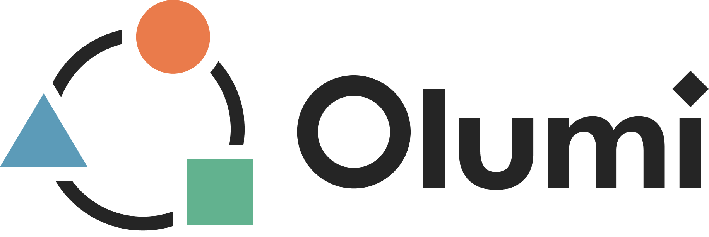

Maya, CSM director
Activation is a strong renewal driver for high-touch accounts.
Confidence: high · Direct account experience
Live modelShared understanding
Built from the brief, workshop notes and three team contributions
Your judgement comes first where an Olumi estimate could anchor the team.
Olumi estimated a modest effect with low confidence. Your rationale adds a competing explanation, so the relationship remains open to challenge.
64% likelihood of reaching the renewal target within the cost constraint.
Best current balance of renewal influence and service cost.
Weak evidence on one influential relationship.
1,000 fixture simulations. Three causal paths. Evidence coverage 62%. The full receipts retain source, assumption and model version for each input.
Sponsor engagement may reflect healthier accounts rather than cause renewal. Add the competing mechanism before committing the pilot.
The dashed items are a preview. Olumi never applies them without review.
Sponsor engagement was reclassified as a weak causal driver. Executive reviews now support the plan rather than lead it.
Everyone has responded. Views stay private until the group reveals them together.
Activation is a strong renewal driver for high-touch accounts.
Confidence: high · Direct account experienceThe effect is modest and depends on the service segment.
Q2 cohort analysis, 1,842 accountsActivation matters most where support usage is already high.
Confidence: medium · Private judgementThe evidence suggests two conditional relationships: strong for high-touch accounts, weak for self-serve accounts.
Both views and Noah's evidence remain attached. The current analysis is now marked out of date.
Responses become explanations or reviewable changes to the shared model.
Goal, three routes, five factors and one risk added.
Olumi proposal accepted by PaulMaya linked executive reviews to sponsor engagement.
Source retained on relationship“Show me what would overturn the current view.”
Olumi prioritised the sponsor engagement proxyThe log retains conversation and receipts. The field remains the canonical work.
This judges the experienced PoC surface, not React component names. Recreated thumbnails are grounded in the current canvas, results, inspector and conversation patterns.
Distinctive foundations
The openness is distinctive and keeps the model primary.
A rigorous, learnable grammar for what each element is.
Keep direct manipulation and confidence, source and evidence receipts.
One canonical answer
Merge into the Current direction card and Outcome lens.
Consolidate into one prioritised Resolve next interaction.
Consolidate into one adaptive AI entry, plus a retained Thinking log.
Available in context
Move into a temporary editor anchored to the selected element.
Collapse into the Thinking log, with one contextual composer.
Keep one level down under Evidence and method or the evolution receipt.
Unique value is too low
Remove controls that cannot act in the current PoC.
Remove until a real evolution view exists.
The need remains important
Rebuild as lenses and transient trays over one stable field.
Rebuild as model-first momentum plus one high-value unknown.
Rebuild as an actionable intervention and a causal change story.
Sixteen shells are merged, moved or rebuilt. Only the inactive Version history button and disabled Assistant options are outright removals. Every card records what survives.
The model changed since this result.
Important content and actions move closer to the shared model. They do not disappear.
Headline, ranking, probability and target fit
One answer with clickable causal support
Connect explanation to model detail
Reference becomes direct manipulation
Find fragility and suggest follow-up
Test, add a competing mechanism or dismiss
Fill gaps before analysis
Human judgement, team, evidence, estimate or unknown
Move among conversation, analysis and model detail. Compare and Journey remain latent, not default.
The model stays spatially stable under every lens
Know when an edit affects analysis
Edit → result change → practical implication
Retain requests, responses and provenance
Conversation is retained but not the canonical work
Bring distributed expertise into the work
Disagreement changes the model when it matters
Audit science, evidence and provenance
Progressive detail attached to the canonical result
The shared visual model remains stable while lenses, interventions and contextual trays change how the team reads or edits it.
Conversation, analysis and collaboration attach to the field instead of becoming competing destinations.
Structure, outcome and change reuse spatial memory and remove the pre/post-analysis product split.
Olumi adds, edits, connects and challenges with explicit human review.
Scientific reasoning becomes a useful optional intervention, not an annotation layer.
This depends on excellent prioritisation, stable layout and reliable retrieval through the Thinking log.
Also rejected: rigid stage gating, hidden AI edits, early AI estimates and forced consensus.
Preserve the current PoC as a time-limited, read-only reference build or tagged deploy while the chosen redesign is tested. Do not maintain two permanent products.